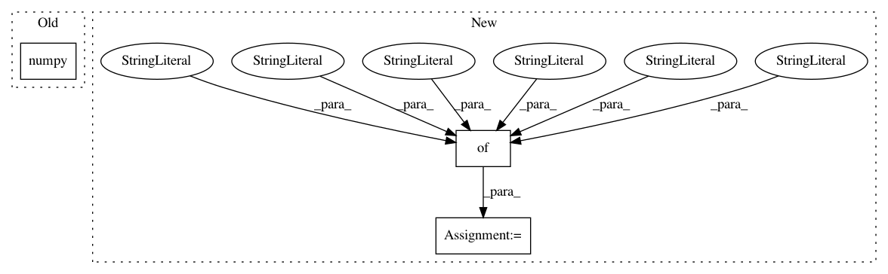

0bab77b7cadae1aaff59a2efcacc39bc9a9d3ecc,dnc/dnc.py,DNC,_layer_forward,#DNC#Any#Any#Any#,167
Before Change
if self.share_memory:
read_vecs, mhx = self.memories[0](ξ, mhx)
if self.debug:
mem_debug.append(mhx["memory"][0].data.cpu().numpy())
else:
read_vecs, mhx = self.memories[layer](ξ, mhx)
if self.debug:
After Change
read_vectors = [0] * max_length
if self.debug:
mem_debug = {
"memory": [],
"link_matrix": [],
"precedence": [],
"read_weights": [],
"write_weights": [],
"usage_vector": [],
}
for time in range(max_length):
// pass through controller
layer_input = input[time]
In pattern: SUPERPATTERN
Frequency: 3
Non-data size: 3
Instances
Project Name: ixaxaar/pytorch-dnc
Commit Name: 0bab77b7cadae1aaff59a2efcacc39bc9a9d3ecc
Time: 2017-11-02
Author: root@ixaxaar.in
File Name: dnc/dnc.py
Class Name: DNC
Method Name: _layer_forward
Project Name: ixaxaar/pytorch-dnc
Commit Name: 4079060908ec43d01e86665792b165269c9545b4
Time: 2017-11-02
Author: root@ixaxaar.in
File Name: dnc/dnc.py
Class Name: DNC
Method Name: _layer_forward
Project Name: pytorch/audio
Commit Name: af2c2bf7dc00ddade0916b41de6e2aca3a0b2753
Time: 2019-05-22
Author: jamarshon@fb.com
File Name: test/test_transforms.py
Class Name: Tester
Method Name: test_librosa_consistency